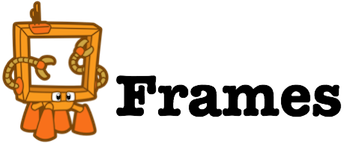

Enter Blueprints
- Blueprints is a collection of interfaces, implementations, and test suites for the property graph data model. Blueprints is analogous to the JDBC, but for graph databases.
Simple Object API
Graph graph = new UomGraph();
Vertex a = graph.addVertex(null);
Vertex b = graph.addVertex(null);
a.setProperty("name","marko");
b.setProperty("name","peter");
Edge e = graph.addEdge(null, a, b, "knows");
e.setProperty("since", 2006);
graph.shutdown();
 Frames allows you to interact with Objects defined by Schemas
Frames are defined by objects with simple interfaces
public interface Person {
@Property("name")
public String getName();
@Property("name")
public void setName(String name);
}
Interact with Frames as POJOs
Person person = framedGraph.getVertex(1, Person.class);
person.setName("Curtis");
// Passing Test
assertTrue("Curtis",person.getName());

public interface Person { @Adjacency(label="knows") public void addKnowsPerson(final Person person); @GremlinGroovy(value = "it.outE('knows').inV.has('name', name).hasNext()", frame= false) public boolean isRelatedTo(@GremlinParam("name") String name); }
Person curtis = framedGraph.addVertex(13, Person.class); curtis.setName("Curtis");
Person marko = framedGraph.getVertex(1, Person.class); marko.addKnowsPerson(curtis); Assert.assertEquals(true,marko.isRelatedTo("Curtis"));
Vertex a = graph.addVertex(null);
Vertex b = graph.addVertex(null);
a.setProperty("name","marko");
b.setProperty("name","peter");
Edge e = graph.addEdge(null, a, b, "knows");
Becomes
Person a = framedGraph.addVertex(null, Person.class);
Person b = framedGraph.addVertex(null, Person.class);
a.setName("marko");
b.setName("peter");
a.addKnowsPerson(b);
public interface Knows {
@Property("weight")
public Float getWeight();
@Property("weight")
public Float setWeight(float weight);
@Domain
public Person getDomain();
@Range
public Person getRange();
}
Person marko = framedGraph.getVertex(1, Person.class);
Person vadas = framedGraph.getVertex(2, Person.class);
Knows knows = framedGraph.getEdge(7, Direction.OUT, Knows.class);
assertEquals(marko, knows.getDomain());
assertEquals(vadas, knows.getRange());
http://localhost:8182/graphs/tinkergraph/vertices/1
{
"version":"*.*",
"results": {
"_type":"vertex",
"_id":"1",
"name":"marko",
"age":29
},
"queryTime":0.12351
}
/
#